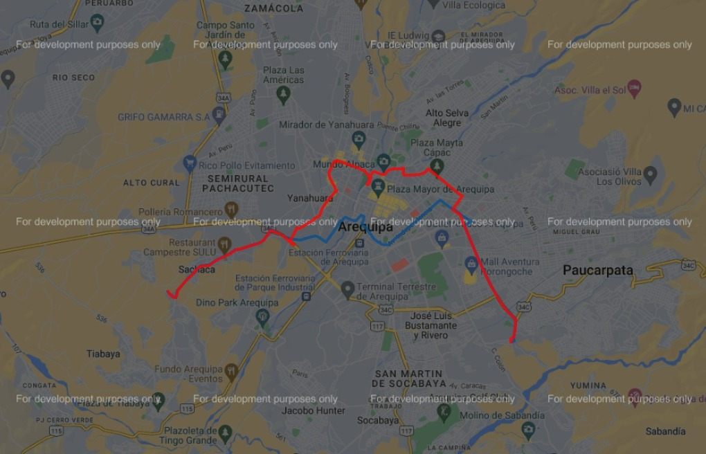

Paraderos de la unidad C7 AqpMasivo
- Paradero
- PLAZA PAUCARPATA
- CRISTO REY
- PUENTE KENEDY
- 200 MILLAS
- GOBIERNO REGIONAL
- HOSPITAL EDMUNDO ESCOMEL
- 15 DE AGOSTO
- EL CRUCE
- LAMBRAMANI
- LA ISLA
- AV. LIMA
- FERIA DEL ALTIPLANO
- GRIFO EL BIBERO
- CANAL 6
- LA SALLE
- UNSA INGENIERIAS
- CALLE PAUCARPATA
- COLISEO AREQUIPA
- VICTOR LIRA
- ESTADIO MELGAR
- LA BARRACA
- ISUR
- VALLECITO
- LA MARINA
- UNIVERSIDAD CATOLICA SANTA MARIA
- PUENTE DE FIERRO
- ARCO DE TAHUAYCANI
- PAMPA DE CAMARONES
- LA CACAU
- ALTO DE AMADOS
- TERMINAL